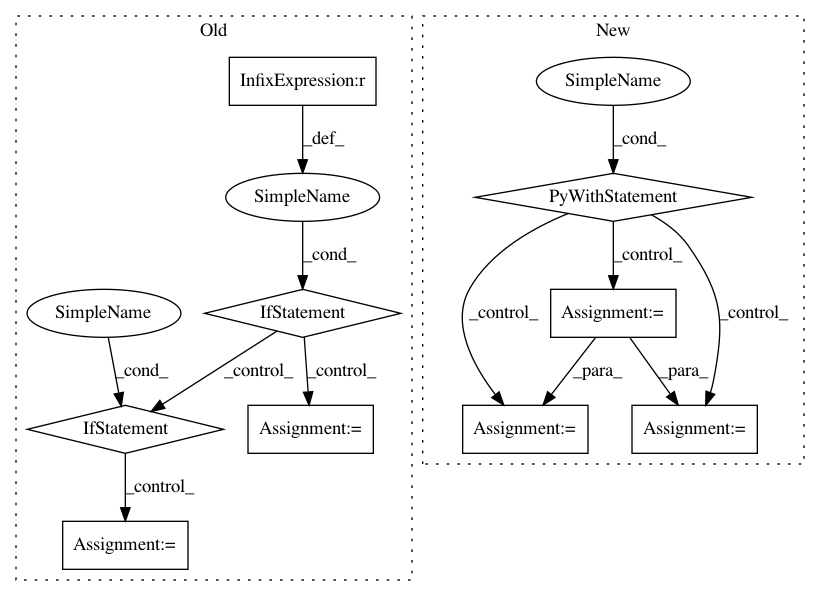

bae902f30638942d08819ec9cd4acdc5f6e33682,pyglmnet/datasets.py,,fetch_group_lasso_datasets,#,106
Before Change
negative_url = \
"http://hollywood.mit.edu/burgelab/maxent/ssdata/MEMset/train0_5_hs"
if sys.version_info[0] == 3:
pos_file = tempfile.NamedTemporaryFile("w+", buffering=1)
neg_file = tempfile.NamedTemporaryFile("w+", buffering=1)
elif sys.version_info[0] == 2:
pos_file = tempfile.NamedTemporaryFile(bufsize=0)
neg_file = tempfile.NamedTemporaryFile(bufsize=0)
urlretrieve(positive_url, pos_file.name, _reporthook)
urlretrieve(negative_url, neg_file.name, _reporthook)
positive_sequences = [str(line.strip().upper()) for idx, line in
After Change
negative_url = \
"http://hollywood.mit.edu/burgelab/maxent/ssdata/MEMset/train0_5_hs"
with TemporaryDirectory(prefix="tmp_glm-tools") as dpath:
pos_file = os.path.join(dpath, "pos")
neg_file = os.path.join(dpath, "neg")
urlretrieve(positive_url, pos_file, _reporthook)
urlretrieve(negative_url, neg_file, _reporthook)
with open(pos_file) as posfp:
positive_sequences = [str(line.strip().upper()) for idx, line in
enumerate(posfp.readlines())
if ">" not in line and idx < 2 * 8000]
with open(neg_file) as negfp:
negative_sequences = [str(line.strip().upper()) for idx, line in
enumerate(negfp.readlines())
if ">" not in line and
idx < 2 * len(positive_sequences)]
assert len(positive_sequences) == len(negative_sequences), \
"lengths were not the same: p={pos} n={neg}" \
.format(pos=len(positive_sequences), neg=len(negative_sequences))
In pattern: SUPERPATTERN
Frequency: 3
Non-data size: 9
Instances
Project Name: glm-tools/pyglmnet
Commit Name: bae902f30638942d08819ec9cd4acdc5f6e33682
Time: 2019-06-03
Author: scotto@sharpleaf.org
File Name: pyglmnet/datasets.py
Class Name:
Method Name: fetch_group_lasso_datasets
Project Name: GPflow/GPflow
Commit Name: d1ac7b831ad36cd0e4bdd7980819f83208345148
Time: 2018-02-07
Author: alex.ialongo@gmail.com
File Name: gpflow/expectations.py
Class Name:
Method Name: _expectation
Project Name: analysiscenter/batchflow
Commit Name: 11c6bf1dbd051d087519ff771b39dac600c0d96d
Time: 2019-07-29
Author: 7520522+a-arefina@users.noreply.github.com
File Name: batchflow/models/tf/encoder_decoder.py
Class Name: EncoderDecoder
Method Name: head